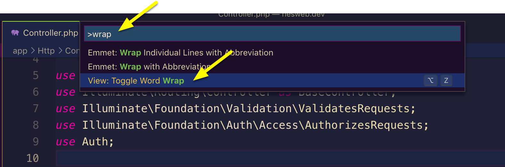

Visual Studio Code (VSCode)
Benefits
- Fast & Free
- Highly extendable/customizable
- Cross-platform
- Widely used
Interface
https://code.visualstudio.com/docs/getstarted/userinterface
- Activity Bar
- Side Bar
- Editor
- Panel
Toggle interface components via View > Appearance.
Zooming
View > Appearance > Zoom in/out
Keyboard shortcuts:
- Mac
- Zoom in: cmd +
- Zoom out: cmd -
- Windows
- Zoom in: ctrl +
- Zoom out: ctrl -
Extensions
There are many extensions available to customize and add functionality to VSCode.
As an example, let’s add an extension called fosshaas.fontsize-shortcuts which will allow you to zoom just the editor window, not the entire interface (as the above zooming instructions showed).
To add a new extension, go to:
- Mac: Code > Preferences > Extensions
- Windows: File > Preferences > Extensions
Type the extension name in the search box (e.g. fontsize-shortcuts)
Click the appropriate search result to read about the extension.
On the info page, find the Install button.
Once fontsize-shortcuts is installed, click the editor pane then try the zoom
keyboard
shortcuts listed above and note how it zooms just that pane.
Click the Side Bar and try the shortcuts again - now it’ll zoom the entire interface.
For reference, extensions are saved in the following locations:
- Mac:
~/.vscode/extensions/ - Windows:
c:\Users\YourUsername\.vscode\extensions\
Themes
Themes can also be installed via Extensions.
The theme I use is luxcium.pop-n-lock-theme-vscode.
Settings
https://code.visualstudio.com/docs/getstarted/settings
Access settings via:
- Mac: Code > Preferences > Settings
- Windows: File > Preferences > Settings
There are a lot of settings, so take advantage of the search bar up top when looking for something.
As an example, I don’t like the Minimap, so let’s disable this via settings.
Settings can also be edited via a config file found at the following locations:
- Mac:
~/Library/Application\ Support/Code/User/settings.json - Windows:
%HOME%\AppData\Roaming\Code\User\settings.json
The settings file is written using JSON, which you can learn more about here...
Format on save
VSCode comes built in with auto-formatting features which will neaten up your code syntax, taking care of things like:
- Remove trailing commas
- Remove extraneous white space
- Convert single to double or double to single quotes
- Align nested code properly
- Etc.
Formatting rules can be configured, and you can add new formatters for languages that VSCode does not support out of the box.
Neat and consistent code is easier to read and less prone to bugs, so it’s an important detail to tend to. Because of this, I recommend enabling Format on save so the formatter will run every time you save changes to a file.
Keyboard shortcuts (keybindings)
https://code.visualstudio.com/docs/getstarted/keybindings
Access keybinding settings via:
- Mac: Code > Preferences > Keyboard Shortcuts
- Windows: File > Preferences > Keyboard Shortcuts
Or, via these config files:
- Mac:
~/Library/Application\ Support/Code/User/keybindings.json - Windows:
%HOME%\AppData\Roaming\Code\User\keybindings.json
The following are some default keyboard shortcuts you may see me use in lecture:
Quick Open:
- Mac:
cmd+p - Windows:
ctrl+p
Toggle line comment:
- Mac:
cmd+/ - Windows:
ctrl+/
Indent lines:
- Mac:
cmd+] - Windows:
ctrl+]
De-indent lines:
- Mac:
cmd+[ - Windows:
ctrl+[
And here are some custom keybindings I have set up:
[
{
"key": "shift+cmd+a", // Toggle the Activity Bar on/off
"command": "workbench.action.toggleActivityBarVisibility"
},
{
"key": "shift+cmd+'", // Collapse all folders in Side Bar : Explorer
"command": "workbench.files.action.collapseExplorerFolders"
},
{
"key": "cmd+n", // Instead of opening a new file, cmd+n opens a new window
"command": "workbench.action.newWindow"
}
]
Command Palette
VSCode’s Command Palette lets you quickly access functionality within VSCode.
To open the Command Palette:
- Mac:
cmd + shift + p - Windows:
ctrl + shift + p
As an example of how you might use the Command Palette, let’s say you want to toggle Word Wrap on or off.
You could do this via the menus: View > Toggle Word Wrap
Or you could use the keyboard shortcuts: Mac: option + Z, Windows alt + z
But, imagine you can’t remember where it is in the menu, or you forgot the keyboard shortcut - instead
you can open the Command Palette and type in word or wrap or
word wrap to narrow down to the command you're looking for.
Use the arrow keys to select the desired command from the palette and hit enter.
VSCode is packed with settings and features, so the Command Palette is a useful tool to quickly find what you’re looking for.
Features we won’t be covering
Due to time constraints and other factors, I won’t be covering or using all the features VSCode offers.
For example, while VSCode has a nice interface for Version Control, we’ll instead focus our attention of Version Control via the Command Line (for reasons I’ll explain in lecture).
You’re welcome to explore the other tools/features within VSCode as you find them useful.